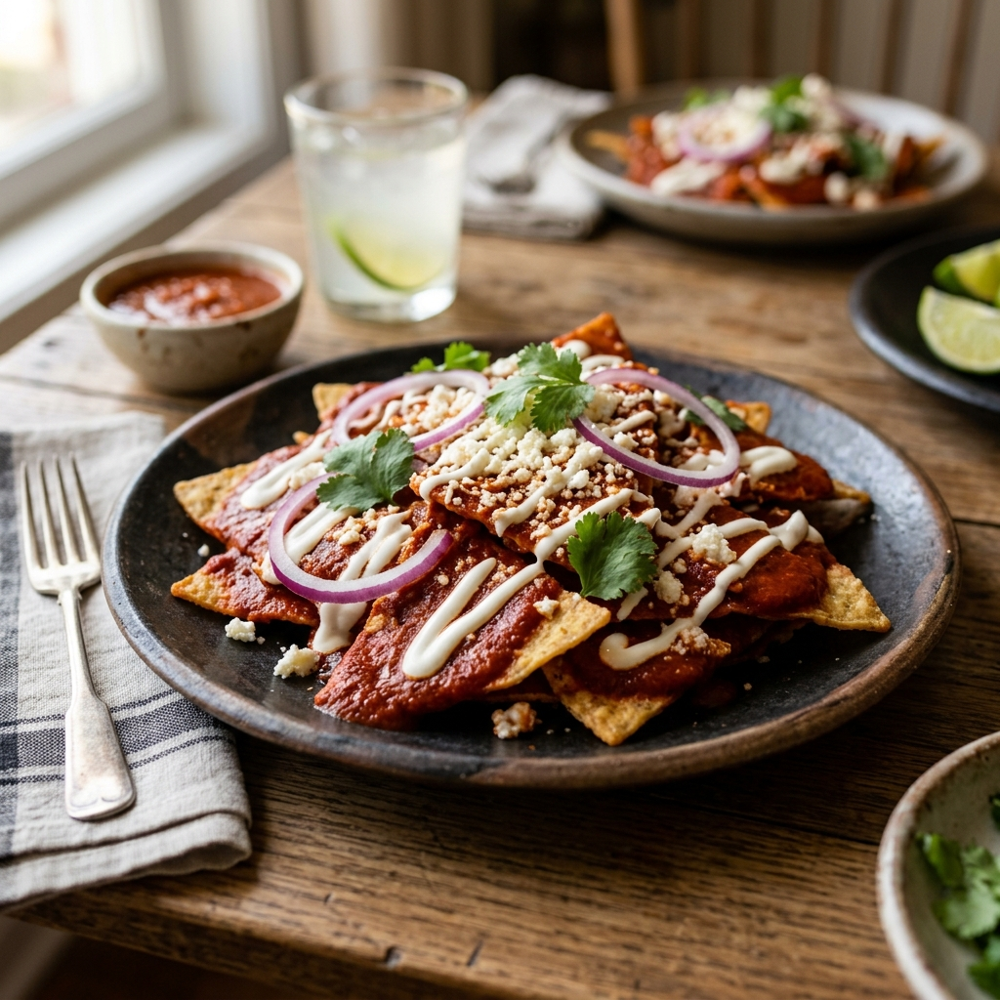
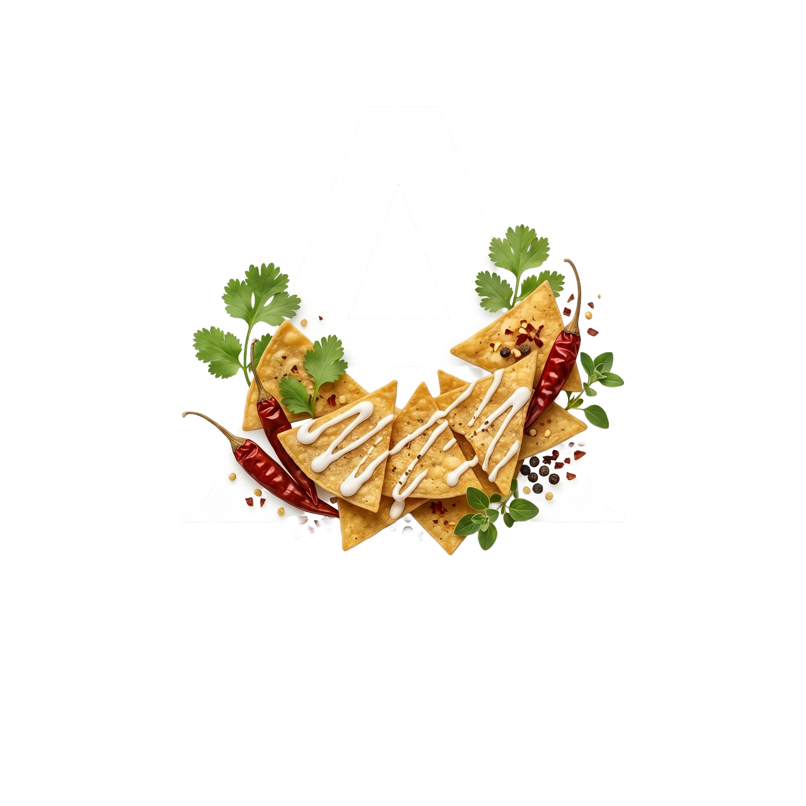

CHILAQUILES
Artesanos de la Salsa
🌶️ San Luis Potosí • Ruta 57

¡EL SECRETO
HA SIDO REVELADO!
🌶️ Food Truck • San Luis Potosí

🌶️ NUESTROS CLÁSICOS
🥇 Combo Full Tank
🔥 El Despertar
👑 Banquete del Patrón
🌊 Joyas del Mar
+ Bebidas, Toritos, Tacos y más...

📍 ENCUÉNTRANOS
"El Lavadero SLP"
Calle 2a #185, Col. Aviación
San Luis Potosí
🕐 Lun-Vie: 9:00 - 18:00 | Sáb: 8:00 - 15:00

¡ORDENA AHORA!
Escríbenos por WhatsApp
📱 +52 55 6148 5296
Ruta 57 • San Luis Potosí
ARISTEUS
Artesanos de la Salsa
📍 San Luis Potosí, SLP • Ruta 57
@chilaquilesaristews